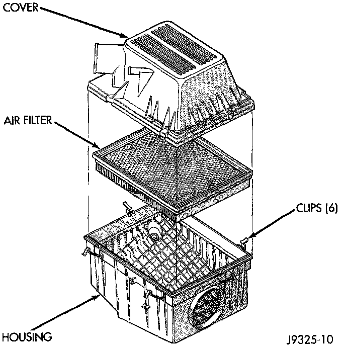

Air Filter Element: Service and Repair
AIR CLEANER ELEMENT (FILTER) REMOVAL/INSTALLATIONFig. 86 Air Cleaner Element R&R:

1. Pry back the six clips retaining the air cleaner cover to the air cleaner housing (Fig. 86).
2. Lift the cover up and position to the side.
3. Remove air cleaner element.
4. Clean the inside of air cleaner housing before installing new element.
5. Reverse the preceding operation for installation. Be sure the air cleaner cover is properly seated to air cleaner housing.